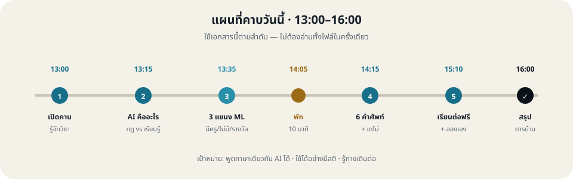
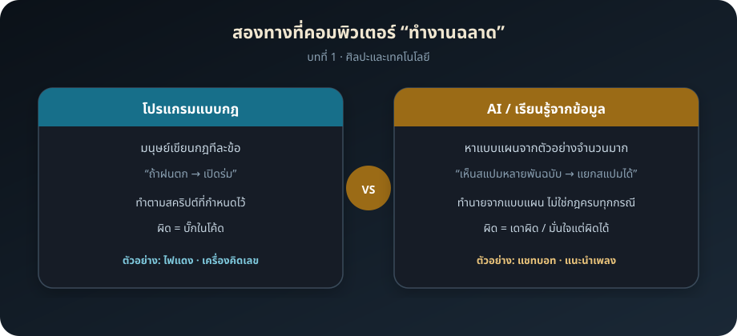
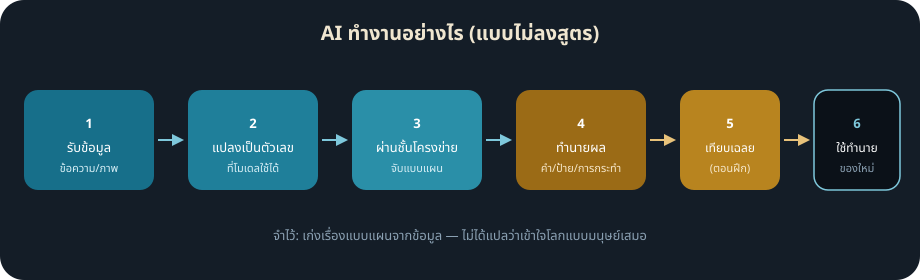
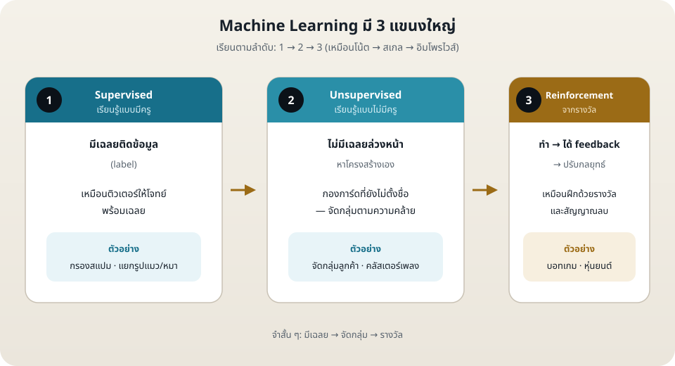
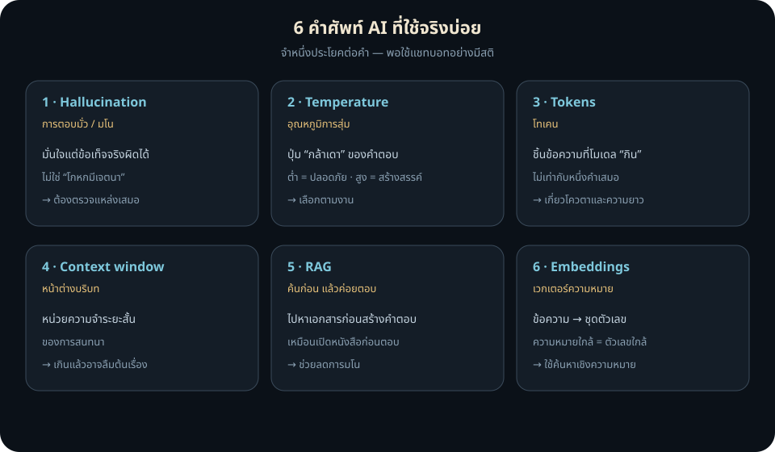

เอกสารประกอบการเรียนสำหรับนิสิต · รายวิชา 3500230 ศิลปะและเทคโนโลยี
| คาบ | 3 ชั่วโมง · วันจันทร์ 13:00–16:00 น. |
| สำหรับ | นิสิตที่เริ่มต้น ไม่จำเป็นต้องเขียนโปรแกรมมาก่อน |
| วันนี้คุณจะได้ | เข้าใจ AI แบบง่าย · แยก 3 แขนง ML · รู้ 6 คำศัพท์สำคัญ · ลองใช้ AI อย่างมีสติ · รู้ทางเรียนต่อฟรี |
กฎทองของรายวิชา (จำไว้ทั้งเทอม)
- AI เป็นเพื่อนร่วมวง ไม่ใช่ผู้แทนคุณ
- สาระทางดนตรีมาก่อนความสวยของผลลัพธ์จากหน้าจอ
- ใช้เครื่องมือแบบ free tier เป็นหลัก
- งานที่คิดคะแนนทุกชิ้นต้องเปิดเผยการใช้ AI
เอกสารนี้เขียนให้นิสิตอ่านเอง — ไม่ใช่สคริปต์ผู้สอน
ดูส่วน 「แบบฝึกในชั่วโมง」 และ 「การบ้านและแบบฝึก ·
เตรียมสัปดาห์หน้า」 ท้ายบททุกครั้ง

| เวลา | คุณจะเรียนอะไร |
|---|---|
| 13:00–13:15 | เปิดคาบ · รู้จักรายวิชา · ถาม–ตอบสั้น |
| 13:15–13:35 | AI คืออะไร · กฎ vs การเรียนรู้จากข้อมูล |
| 13:35–14:05 | 3 แขนง Machine Learning |
| 14:05–14:15 | พัก 10 นาที (แนะนำให้ล็อกอินบัญชี AI ฟรี) |
| 14:15–14:40 | 6 คำศัพท์ที่ต้องรู้ |
| 14:40–15:10 | ดูตัวอย่างการใช้จริง + อภิปราย |
| 15:10–15:30 | เส้นทางเรียนต่อฟรี (Microsoft / GitHub) |
| 15:30–15:50 | ลองทำ Prompt lab เอง |
| 15:50–16:00 | สรุป + สิ่งที่ควรทำต่อที่บ้าน |

| โปรแกรมแบบกฎ | AI / เรียนรู้จากข้อมูล | |
|---|---|---|
| ใครกำหนด | มนุษย์เขียนกฎทีละข้อ | มนุษย์เตรียมข้อมูล + ระบบหาแบบแผน |
| ตัวอย่างประโยค | “ถ้าฝนตก → เปิดร่ม” | “เห็นอีเมลสแปมหลายพันฉบับ → แยกสแปมได้” |
| เมื่อผิด | บั๊กในโค้ด | ทำนายผิด / เดาอย่างมั่นใจ |
| ชีวิตประจำวัน | ไฟแดง · เครื่องคิดเลข | แชทบอท · แนะนำเพลง · กรองสแปม |
คำถามคิดตาม (ตอบในใจหรือจดโน้ต):
ในชีวิตคุณ มีอะไรบ้างที่น่าจะเป็น “กฎที่คนเขียน” และอะไรที่น่าจะเป็น
“เรียนรู้จากข้อมูล”?
ตัวอย่างคำตอบ: ไฟแดง = กฎ · เพลย์ลิสต์แนะนำ = เรียนรู้

ประโยคสำคัญที่ควรจำ
AI ฉลาดในแง่ที่ หาแบบแผนจากข้อมูล ได้ดีมาก
— ไม่ได้แปลว่าเข้าใจโลกแบบมนุษย์ หรือไม่เคยผิด
| งาน | AI เรียนรู้อะไร |
|---|---|
| กรองสแปม | คำ/รูปแบบที่มักเป็นสแปม จากอีเมลที่คนเคย flag |
| แนะนำเพลง | คนที่ชอบ A มักชอบ B |
| แชทบอท | คำถัดไปที่ “น่าจะถูก” จากข้อความมหาศาล |
Machine Learning (ML) = การเรียนรู้ของเครื่อง
เปรียบง่าย ๆ เหมือนดนตรี: โน้ต → สเกล → อิมโพรไวส์
ควรทำความเข้าใจตามลำดับ 1 → 2 → 3

| งาน | อินพุต | คำตอบ (label) |
|---|---|---|
| กรองสแปม | ข้อความอีเมล | สแปม / ไม่สแปม |
| ทำนายคะแนน | ชั่วโมงอ่านหนังสือ | คะแนน |
| ดนตรี | คลิปเสียงสั้น | “คอร์ด C” / “ไม่ใช่” |
ถ้าคุณเคยกด like / dislike หรือ flag spam — คุณกำลังช่วยสร้าง label ให้ระบบแบบนี้
ตัวอย่าง
จำคู่เปรียบเทียบ
Supervised = “นี่คือแมว”
Unsupervised = “สิ่งพวกนี้คล้ายกัน กองไว้ด้วยกัน”
ตัวอย่าง
แขนงนี้เข้าใจง่ายขึ้นหลังรู้สองแขนงแรก เพราะต้องรู้ก่อนว่า “วัดผล” และ “ทำนาย” คืออะไร
จับคู่ให้ถูก:
| สถานการณ์ | คำตอบ |
|---|---|
| แยกประเภทรูปแมว/หมา | Supervised |
| จัดกลุ่มผู้ฟังคอนเสิร์ตจากประวัติซื้อบัตร โดยยังไม่ตั้งชื่อกลุ่ม | Unsupervised |
| AI ฝึกยิงบาสในเกมจนได้แต้มสูงขึ้น | Reinforcement |

| # | คำอังกฤษ | ภาษาคน | จำหนึ่งประโยค | ทำไมสำคัญกับคุณ |
|---|---|---|---|---|
| 1 | Hallucination | ตอบมั่ว / มโน | มั่นใจแต่ข้อเท็จจริงผิดได้ | อย่าเชื่อชื่อคน ปีเพลง หรือทฤษฎีโดยไม่ตรวจ |
| 2 | Temperature | อุณหภูมิการสุ่ม | ปุ่ม “กล้าเดา” | งานสรุปใช้ต่ำ · งานไอเดียสร้างสรรค์ใช้สูงขึ้นได้ |
| 3 | Tokens | โทเคน | ชิ้นข้อความที่โมเดลกิน | กระทบโควตา free tier และความยาวที่คุยได้ |
| 4 | Context window | หน้าต่างบริบท | หน่วยความจำระยะสั้นของการสนทนา | คุยยาวมากอาจลืมสิ่งที่บอกตอนต้น |
| 5 | RAG | ค้นก่อน แล้วค่อยตอบ | ไปหาเอกสารก่อนสร้างคำตอบ | ลดการมโนเมื่อมีแหล่งจริง (เช่น ไฟล์ที่อัปโหลด) |
| 6 | Embeddings | เวกเตอร์ความหมาย | ข้อความ → ตัวเลขที่จับความใกล้เคียง | พื้นฐานการค้นหา “ความหมายคล้าย” |
อ่านสถานการณ์ แล้วบอกว่าเป็นคำไหน:
ในคาบอาจารย์จะสาธิตบนจอ คุณใช้ส่วนนี้เป็นคู่มือทดลองเอง และทบทวนหลังคาบ
ลอง prompt นี้:
สรุปใน 3 ประโยคว่า Machine Learning ต่างจากโปรแกรมที่เขียนกฎตายตัวอย่างไร
ใช้ภาษาที่นักเรียนมัธยมเข้าใจได้สิ่งที่คุณควรทำหลังได้คำตอบ
ลอง (หรือดูตอนสาธิต) ชื่อเพลง/งานที่ไม่มีจริง:
ใครเป็นผู้ประพันธ์เพลงไทยชื่อ "แสงจันทร์บนดอยอินทนนท์ ฉบับปี 2499"
ตอบสั้น ๆ พร้อมปีเกิดของผู้ประพันธ์จากนั้นลองตั้งกฎใน prompt:
ถ้าคุณไม่แน่ใจว่ามีเพลงนี้จริง ให้ตอบว่า "ไม่พบข้อมูลที่ตรวจสอบได้"
อย่าเดาชื่อคนหรือปีบทเรียน: การตั้งกฎช่วยลดการเดาได้ แต่ไม่ 100% — งานสำคัญต้องตรวจแหล่งภายนอกเสมอ
งานเดียวกัน ขอคนละโทน:
สังเกตว่าคำตอบเปลี่ยนโทน — นั่นคือแนวคิด temperature ในภาษาคน
โพสต์สั้น ๆ จุดไฟได้ดี แต่ถ้าอยากต่อเนื่อง ควรมีเส้นทางเป็นบท
| คอร์ส | เหมาะกับใคร | ในคาบนี้ทำอะไร |
|---|---|---|
| Microsoft Generative AI for Beginners | อยากใช้ GenAI / แชท / สร้างเนื้อหา | เปิดหน้าสารบัญ + บทนำ |
| Microsoft AI for Beginners (~12 สัปดาห์ / 24 บท) | อยากเข้าใจ AI กว้างขึ้นทีละขั้น | ดูว่ามีแผนเป็นระบบ ไม่ต้องเรียนจบวันนี้ |
ลิงก์จะแจกในชั้น / myCourseVille — วันนี้แค่รู้จักทาง ไม่ต้องสมัคร 20 แพลตฟอร์ม
ทำคนเดียวหรือจับคู่ · ใช้บัญชี free tier
คัดลอกไปวางในแชทบอท:
คุณเป็นติวเตอร์อธิบาย AI ให้มือใหม่
1) อธิบาย Supervised Learning ด้วยตัวอย่างจากชีวิตประจำวัน 1 อย่าง
2) เตือนเรื่อง hallucination ใน 2 ประโยค
3) ถามฉัน 1 คำถามเพื่อตรวจว่าฉันเข้าใจหรือยัง
ใช้ภาษาไทย กระชับอธิบาย Unsupervised Learning ด้วยตัวอย่างที่เกี่ยวกับดนตรีหรือการฟังเพลง
สั้น ไม่เกิน 5 ประโยคเป้าหมายของ 3 ชั่วโมงนี้ไม่ใช่ทำให้ทุกคนเป็นวิศวกร AI
แต่ให้ทุกคนพูดภาษาเดียวกันกับเครื่องมือ AI และใช้ได้อย่างมีสติ
| ระดับ | งาน | เวลาโดยประมาณ |
|---|---|---|
| ขั้นต่ำ (ทุกคน) | ทบทวนตาราง 3 แขนง + 6 คำศัพท์ในเอกสารนี้ | 15 นาที |
| แนะนำ | เปิด Generative AI for Beginners หรือ AI for Beginners แล้วทำบทนำ | 30–45 นาที |
| ท้าทาย | ให้ AI อธิบาย Unsupervised ด้วยตัวอย่างของคุณ แล้วให้เพื่อนช่วยดูว่าถูกประเภทไหม | 20 นาที |
| เตรียมคาบหน้า | บัญชี free tier พร้อมใช้ · อ่านกฎเปิดเผยการใช้ AI สั้น ๆ | 10 นาที |
| คำไทย | คำอังกฤษ | จำหนึ่งประโยค |
|---|---|---|
| การเรียนรู้ของเครื่อง | Machine Learning (ML) | คอมพิวเตอร์เก่งขึ้นจากข้อมูล ไม่ใช่แค่กฎตายตัว |
| มีครู | Supervised | มีเฉลยติดข้อมูล |
| ไม่มีครู | Unsupervised | หาโครงสร้างเอง |
| จากรางวัล | Reinforcement | ทำ → ได้ feedback → ปรับ |
| โครงข่ายประสาทเทียม | Neural network | ชั้นที่เรียนรู้แบบแผนจากข้อมูล |
| ตอบมั่ว / มโน | Hallucination | มั่นใจแต่ผิดได้ |
| อุณหภูมิการสุ่ม | Temperature | ควบคุมความกล้าเดา |
| โทเคน | Token | ชิ้นข้อความที่โมเดลนับ |
| หน้าต่างบริบท | Context window | จำได้แค่ในกรอบนี้ |
| ค้นก่อนแล้วค่อยตอบ | RAG | ค้นเอกสารก่อนสร้างคำตอบ |
| เวกเตอร์ความหมาย | Embedding | ข้อความ → ตัวเลขที่จับความใกล้เคียง |
| บริการฟรี | Free tier | ใช้ได้โดยไม่จ่าย แต่มีโควตา |
| เปิดเผยการใช้ AI | Disclosure | บอกว่า AI ช่วยตรงไหน และคุณตรวจเองตรงไหน |
| คำสั่งที่ป้อนให้ AI | Prompt | ยิ่งชัด ยิ่งได้คำตอบใช้ได้ |
| สั่ง AI สร้างโปรแกรมด้วยภาษาคน | Vibe coding | จะได้ฝึกมากขึ้นในสัปดาห์ถัดไปของรายวิชา |
คัดลอกแล้วเติมให้ตรงงานของคุณ:
บันทึกเปิดเผยการใช้ AI
1. เครื่องมือและรุ่น/ระดับบริการที่ใช้ (ถ้าทราบ):
2. ส่วนของงานที่ AI ช่วย:
3. prompt สำคัญหรือสรุปกระบวนการ:
4. สิ่งที่ฉันตรวจสอบ แก้ไข ตัดทิ้ง หรือตัดสินใจเอง:
5. แหล่งที่ใช้ตรวจข้อเท็จจริงทางดนตรี/ลิขสิทธิ์:
6. คำรับรอง: ข้าพเจ้าได้ตรวจผลงานฉบับส่งและรับผิดชอบการตัดสินใจในงานนี้ใช้เมื่ออยากทบทวนหรือเรียนต่อ — ไม่ต้องอ่านครบในคืนเดียว
| หัวข้อ | แหล่ง | หมายเหตุ |
|---|---|---|
| 3 แขนง ML | สื่อภาพ/โพสต์แนว @free_ai_guides | โครง Supervised → Unsupervised → Reinforcement |
| AI ทำงานอย่างไร | สื่ออธิบาย neural network แบบขั้นพื้นฐาน | ดูภาพ ไม่ต้องลงสูตร |
| 6 คำศัพท์ | โพสต์แนว “6 Basic AI Terms” | Hallucination ถึง Embeddings |
| เส้นทางเรียนต่อ | Microsoft Generative AI for Beginners · AI for Beginners | เริ่มบทนำบน GitHub / เว็บคอร์ส |
ส่วนนี้คืองานที่ต้องลงมือ — ในคาบทำกิจกรรมตามลำดับ · หลังคาบทำการบ้านและแบบฝึกเพื่อเอาไปใช้/ส่งในสัปดาห์ 2 · วินิจฉัยการฝึก + multi-step prompt
ตอบในโน้ตหรือแชร์ปากเปล่า 1 ประโยค:
จับคู่หรือคนเดียว — เขียนอย่างละ 2 ตัวอย่างจากชีวิต/ดนตรี:
| กฎที่คนเขียน | เรียนรู้จากข้อมูล |
|---|---|
| 1. | 1. |
| 2. | 2. |
เขียนหมายเลข 1=Supervised 2=Unsupervised 3=Reinforcement:
เพื่อนอ่านสถานการณ์ — คุณตะโกน/เขียนคำศัพท์:
ใช้บัญชี free tier วาง prompt:
คุณเป็นติวเตอร์อธิบาย AI ให้มือใหม่
1) อธิบาย Supervised Learning ด้วยตัวอย่างชีวิตประจำวัน 1 อย่าง
2) เตือนเรื่อง hallucination ใน 2 ประโยค
3) ถามฉัน 1 คำถามเพื่อตรวจว่าเข้าใจหรือยัง
ใช้ภาษาไทย กระชับส่งท้ายชั่วโมง (ติ๊ก):
ใช้เวลาประมาณ 25–40 นาที รวมกัน
เครื่อง/เสียง:
เพลงหรือแบบฝึกหลักตอนนี้:
จุดที่ติดบ่อยที่สุด (ห้อง/ท่อน/เทคนิค):
เวลาซ้อมที่มีจริงต่อวันโดยประมาณ:
สิ่งที่เคยลองแก้แล้ว:| รายการ | |
|---|---|
| บัญชี AI ล็อกอินได้ | [ ] |
| โน้ตปัญหาการซ้อมหยาบ | [ ] |
| หูฟัง (ถ้าใช้แล็บ) | [ ] |
| เอกสารบทที่ 1–2 (ดิจิทัลหรือพิมพ์) | [ ] |
ส่ง/ใช้ในคาบหน้า: โน้ตปัญหาการซ้อมจะถูกขยายเป็นวินิจฉัยการฝึก v1 และใช้เป็นเชื้อของ multi-step prompt
| ไฟล์ | ใช้ตอน |
|---|---|
| images/04-class-map.svg | แผนที่คาบ 13:00–16:00 |
| images/01-rules-vs-ai.svg | กฎ vs AI |
| images/05-ai-loop.svg | AI ทำงาน 6 ขั้น |
| images/02-three-ml-branches.svg | 3 แขนง ML |
| images/03-six-ai-terms.svg | 6 คำศัพท์ |
3500230 ศิลปะและเทคโนโลยี · เอกสารประกอบการเรียนบทที่ 1 สำหรับนิสิต · คาบ 13:00–16:00 · ปรับปรุงให้เป็นภาษาอ่านเอง ไม่ใช่สคริปต์ผู้สอน
{kind=link}
{kind=link}
{kind=link}
{kind=link}
{kind=link}